Lecture notes from quant genomics training (day 2)
PredixCan (TWAS)
GTEx consortium
- collect 1000 organ donors and tissue samples from different sites of the body; all RNA-sequenced (have genotype data)
eQTL
- → that data used to calculate eQTL (expression quantitative trait loci) — SNPs associated/correlated w/ expression levels of a gene
- \(T = \gamma \cdot X+\epsilon\)
- X = genotype; gamma = effect size being estimated
we have genotype data to train predictors
different layers of genotype matrices make up transcriptome
fit linear model to predict weight that gives us best representation of genetic component of expression
take genotype matrix → transform/impute transcriptome
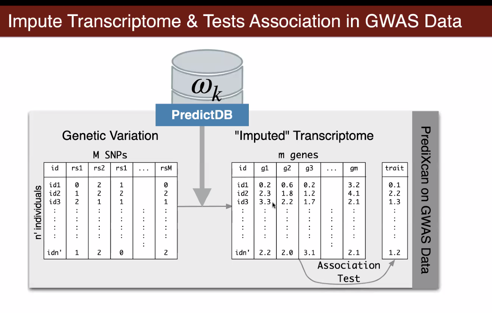
take genotype data → predict transcriptome
How well are we predicting?
compare predicted and observed expression
pretty high correlation (promising)
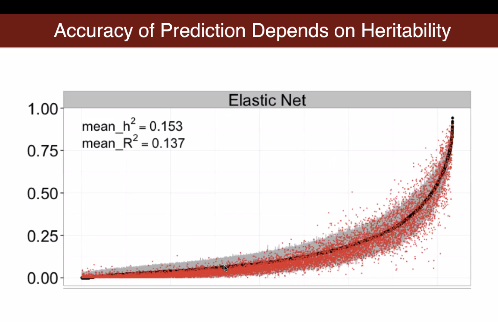
black curve: measure of heritability of the expression level of that gene
Advantages of gene level association
- reduced multiple testing burden (from a million to around 20k)
- function of genes are much better annotated than SNPs
- validation in other model systems is possible (like in mice or zebrafish)
- reverse causality issues is less of an issue (germline DNA doesn’t change w/ disease status)
- provides direction of effects; i.e. whether up or down regulation of a gene increases risk of a disease
- candidate causal gene is a good target for drug development
S-PrediXcan (summary-PrediXcan)
regular PrediXcan: take genotype matrix (hard to get access to) → predict transcriptome → run association for every gene → get gene-level results
- hard to do since it’s hard to get the data in genotype matrix
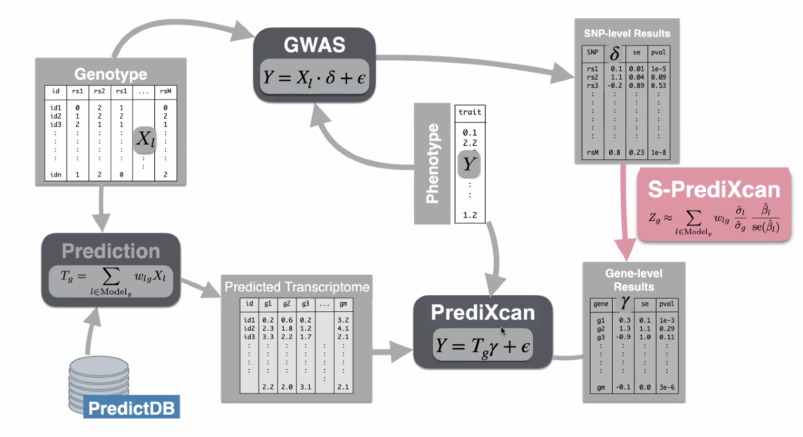
solution: S-prediXcan — take SNP-level results and get gene-level results
- can derive formula that gives you the gene level results from SNP-level results
Limitations of TWAS methods
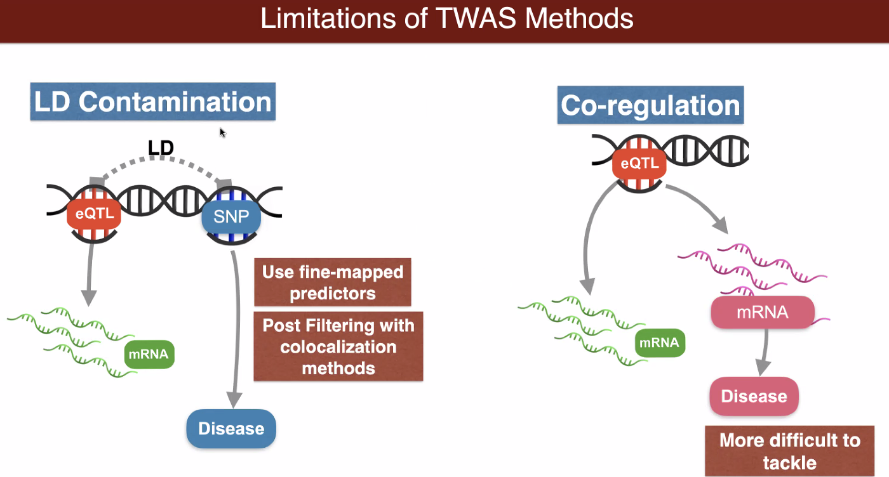
- LD contamination
- in TWAS, taking a bunch of eQTLs and predict mRNA to some degree (correlating that to disease level)
- eQTL is nearby a SNP that is causing the disease — so not actually from eQTL; just from proximity (artifact of LD)
- solutions:
- can use fine-mapped predictors (improve quality of list of genes associated with disease)
- post-filtering w/ colocalization methods
- Co-regulation: cannot figure out which gene is the closer one
- might find 2 different genes that are associated with a disease but one of them is not actually (just a confounder)
- more difficult to tackle
Take home message
- gene-level association methods (TWAS methods) have many advantages but can lead to false positives
- significant genes are excellent hypothesis generators that need to be confirmed with independent lines of evidence (smaller list of genes → less hypothesis tests to run)
Colocalization
given a GWAS study and eQTL study, can try to find which one is the causal gene
attempts to determine whether causal variants altering gene expression levels are same as causal variants that alter disease
key: fine-mapping to find causal variants
- given a statistical method, tries to find causal variants (i.e. what’s the probability that this SNP is the causal variant)
ex. (note: normally we don’t know ground truth) true effects
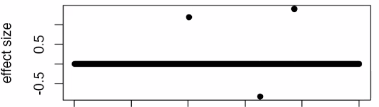simulate phenotype based on this model and run a GWAS
below: GWAS p-values
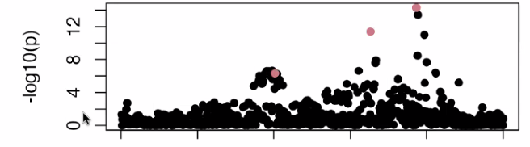
higher up on the plot —> more significant correlation
- not all points at the bottom
fine-mapping
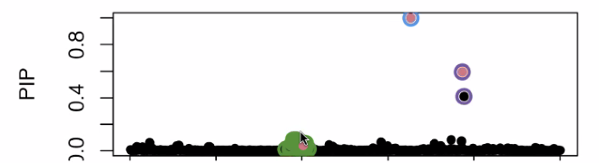
- PIP (posterior inclusion probability) - probability that this given variant is the causal variant using SuSi
Colocalization: are causal variants = ?
- tries to tell you whether causal SNP for one thing is same as causal signal in something else
- ex. what’s mediating trait in FTO muscle and BMI → if we find something, can manipulate levels in one thing to see if it does anything to the other thing
- even if location is the same the SNP could be different
- not colocalized if signal seem to be in the same region but if you do fine mapping that the causal variant for one thing is distinct from the causal variant for the other thing
Limits of colocalization
- fine-mapping can be sensitive to LD reference
correlation matrix that we use between SNPs
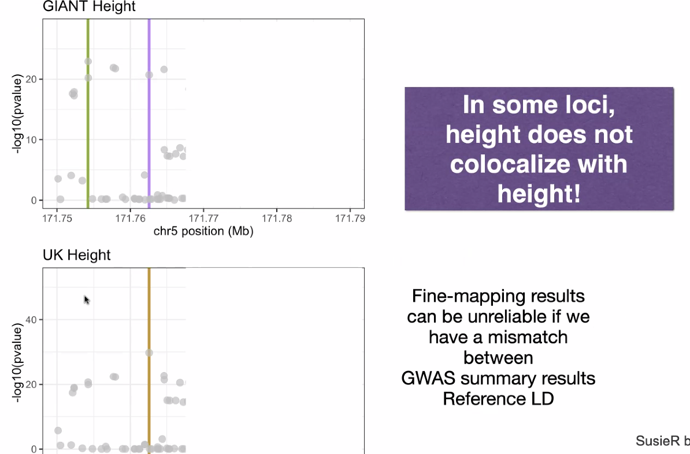
Other TWAS methods
- TWAS/FUSION
- UTMOST
- cTWAS
- uses both fine mapping and association to calculate probability of gene being causal accounting for LD
Colocalization Methods
- COLOC
- ENLOC
- fastENLOC
- eCAVIAR
Mendelian randomization
Randomized trial vs Mendelian randomization
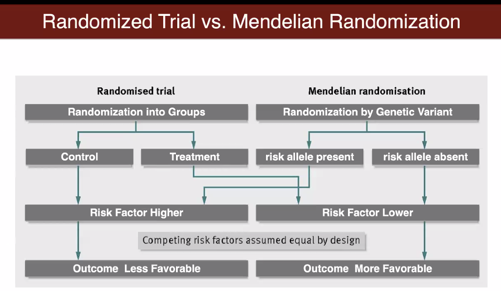
- Mendelian randomization: uses genetic variant as instruments to try to find causal exposures
- randomized trial
- ex. in biomedical studies if you want to know the effect of a drug on the severity of a disease, need to run randomized trial (control+treatment) in order to determine causality
- Mendelian
- randomization occurs by genetic variant (risk allele present or absent) aka nature’s randomized trial
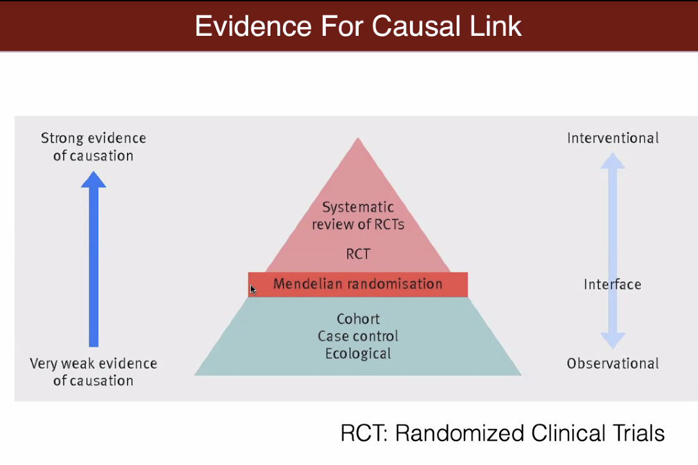
- level of evidence for causation is much higher in Mendelian randomization
Mendelian randomization question
goal: test association between a modifiable exposure+disease (ex. smoking, HDL cholesterol levels, etc.)
problem: if you just look at exposure and disease there could be confounders
solution: IV (SNPs)
- 3 IV assumptions:
- independence assumption between SNPs and confounders
- relevance assumption between SNPs and exposure (reliable association)
- exclusion restriction assumption between SNPs and disease (no direct effect)
- 3 IV assumptions:
TWAS can be thought of as Mendelian randomization
- “exposure” — baseline expression of gene
- want to see if up or down regulation of gene is causing a disease
- if we use SNPs to predict expression level of gene as instrument, can investigate any associations
SMR (summary data-based Mendelian randomization)
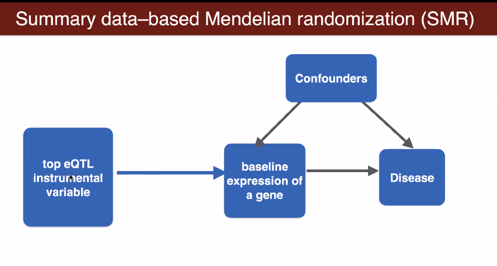
same as previous way but with eQTL as IV
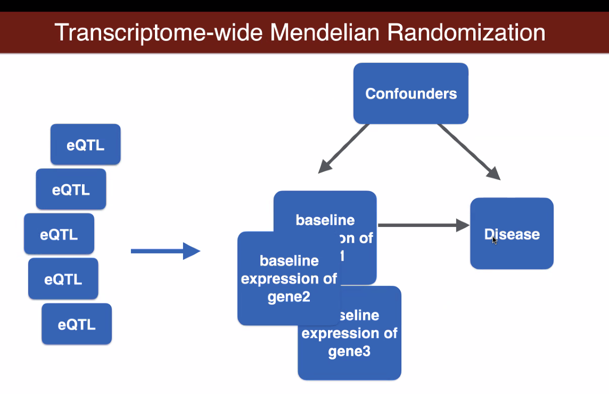
multiple eQTL and multiple genes
New methods
MetaboXcan: predict metabolite levels
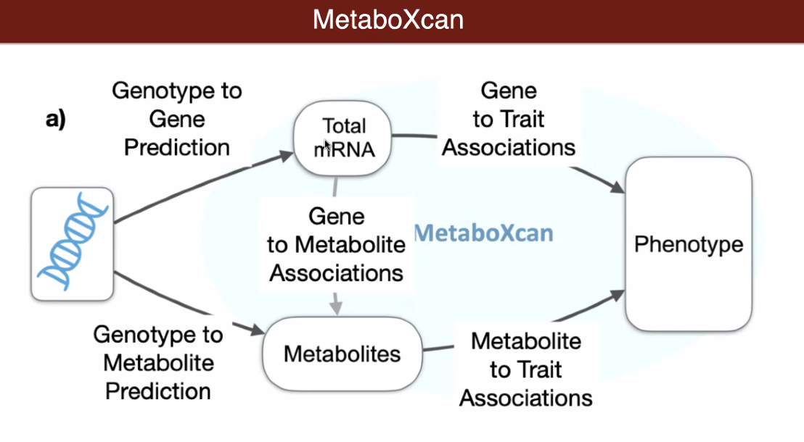
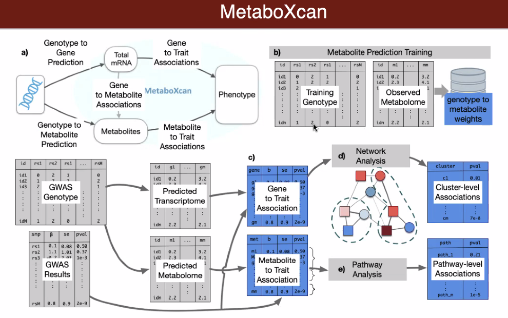
- added link between mRNA levels and metabolites (don’t just want list of genes and list of metabolites)
Deep learning-based predictors
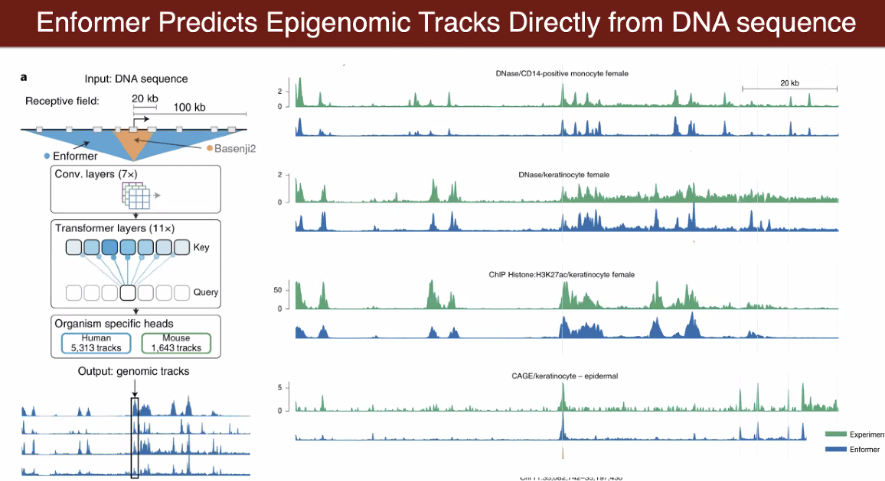
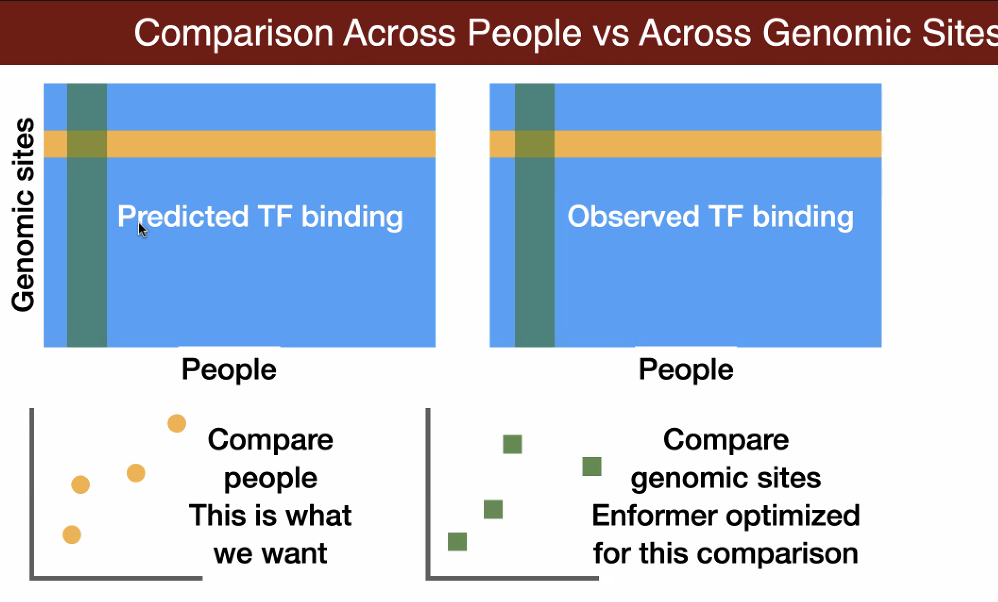
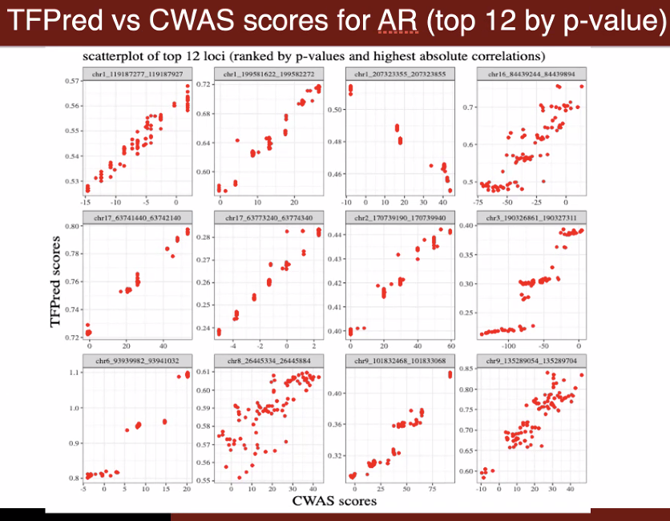
- TFXcan
- single cell PrediXcan
- EpigenomeXcan